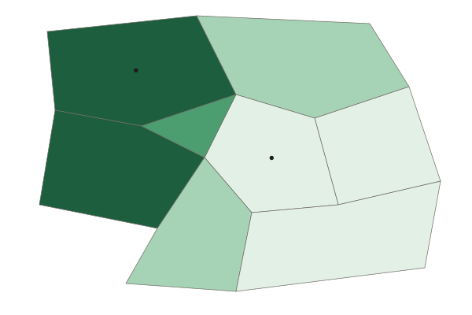

Cultural Patterns
Language, religion and ethnicity are not spread evenly: they form regional patterns that you describe by naming where, what and how much.
Part 1 · Hook
Why this matters
Part 2 · Before you start
What this builds on
Part 3 · Prerequisite check
Quick check before you start
1. An area where one ethnic group is concentrated, visible in its signs and shops, is called what?
- An ethnic neighborhood
- A functional region
- A physical landscape
- A cartogram
Show the answer
An ethnic neighborhood is an area where one ethnic group is concentrated.
- Correct: An ethnic neighborhood:
- A functional region:
- A physical landscape:
- A cartogram:
2. A map shows one value for each province of one country. What is the scale of analysis?
- Local (subnational)
- National
- Global
- Regional (several countries)
Show the answer
The scale of analysis is the scale of the data: provinces inside one country are subnational.
- Correct: Local (subnational):
- National:
- Global:
- Regional (several countries):
3. An area that people believe exists, such as "the South" in the United States, is which kind of region?
- Perceptual region
- Formal region
- Functional region
- Transition zone
Show the answer
A perceptual (vernacular) region exists in people's minds and feelings.
- Correct: Perceptual region:
- Formal region:
- Functional region:
- Transition zone:
Part 4 · See it
See it first

Part 5 · Step by step
How it works, step by step
- People who share a language, religion or ethnicity live close togethera regional pattern of culture forms that you can map
- People shape that area with murals, festivals, signs and places of worshipplacemaking gives the area a strong sense of place
- A trait is shared across a whole countryit pulls people together: a centripetal force
- A trait is concentrated in one region and differs from the rest of the countryit can unite that region but pull it away from the country: a centrifugal force
Part 6 · Key ideas
Key ideas
- Language, religion and ethnicity form regional patterns: Dutch in northern Belgium and French in the south; a mostly Muslim north and mostly Christian south in Nigeria. Describe a pattern by naming where, what and how much.
- Placemaking is people shaping a place to express who they are, such as the murals of Pilsen in Chicago. It builds a sense of place: the meaning a place holds for people.
- A centripetal force pulls people together (a shared language, a national holiday). A centrifugal force pushes them apart (two languages in separate regions, a religious divide).
- Name the scale: one trait can be centripetal inside a region and centrifugal for the country, as the Catalan language is in Spain.
Part 7 · Misconception
A common mistake
The wrong idea: A trait is either always a centripetal force or always a centrifugal force.
What actually happens: It depends on the scale. In Quebec, French unites most people within the province (centripetal), while at the national scale of Canada it has fed a movement to leave (centrifugal).
Part 8 · Check yourself
Check yourself
Exam-style questions. Anything you miss goes into your review queue.
Map
The Highland people by province of Country A

People who belong to the Highland group (percent, invented)
- Under 10%
- 10% to 39%
- 40% to 69%
- 70% or more
1. Which statement best describes the pattern on the map?
- The Highland share is highest in the northwest and lowest in the east
- The Highland share is highest in the Capital Region and the South Coast
- The Highland group is spread evenly across the provinces of the country
- The Highland share rises steadily from the west of the country to the east
Show the answer
the Northern Hills and Western Uplands are in the top class (70% or more), and the Capital Region, Eastern Plains and South Coast are in the lowest (under 10%).
- Correct: The Highland share is highest in the northwest and lowest in the east: Right: the Northern Hills and Western Uplands are in the top class (70% or more), and the Capital Region, Eastern Plains and South Coast are in the lowest (under 10%).
- The Highland share is highest in the Capital Region and the South Coast: Both are in the lightest class on the legend, under 10%, so they have the lowest shares.
- The Highland group is spread evenly across the provinces of the country: The shades range from under 10% to 70% or more, so the group is concentrated, not even.
- The Highland share rises steadily from the west of the country to the east: It falls from west to east: the Western Uplands are darkest and the Eastern Plains lightest.
2. What is the scale of analysis of the data on this map?
- National: the map shows the whole country
- Local (subnational), one value a province
- Global: the group is compared with the world
- Regional: several countries in a world region
Show the answer
the scale of analysis is the scale of the data. Each value is for one province inside Country A, so the data are subnational.
- National: the map shows the whole country: The map covers one country, but its data are for provinces. Readers mark "national" wrong for maps like this.
- Correct: Local (subnational), one value a province: Right: the scale of analysis is the scale of the data. Each value is for one province inside Country A, so the data are subnational.
- Global: the group is compared with the world: No values outside Country A appear on the map.
- Regional: several countries in a world region: The map shows the provinces of one invented country, not a world region of several countries.
3. Highland leaders in the Northern Hills ask for their own schools taught in the Highland language. Based on the map, how could the Highland identity act at two scales?
- It unites the whole country because the group lives in each province
- It divides the Northern Hills but unites the Capital Region
- It unites the northwest but may divide Country A as a whole
- It has no effect, because ethnicity is not part of culture
Show the answer
where most people are Highland, a shared identity pulls people together (centripetal). At the national scale, a group concentrated in one corner can pull away from the rest (centrifugal).
- It unites the whole country because the group lives in each province: The map shows the group concentrated in the northwest, with under 10% in several provinces.
- It divides the Northern Hills but unites the Capital Region: The Northern Hills are mostly Highland, so the identity is more likely to unite them. The Capital Region has few Highland people.
- Correct: It unites the northwest but may divide Country A as a whole: Right: where most people are Highland, a shared identity pulls people together (centripetal). At the national scale, a group concentrated in one corner can pull away from the rest (centrifugal).
- It has no effect, because ethnicity is not part of culture: Ethnicity is a cultural identity, and shared identity is one of the strongest forces that unite or divide.
4. Belgium has a Dutch-speaking north (Flanders) and a French-speaking south (Wallonia). Place the right force on each scale.
One language, two scales: Belgium
- Within Flanders: shared Dutch
- Across Belgium: Dutch and French
Pick a piece, then the place it belongs. Drag works too. Pick a filled place to take its piece back.
Show the answer
The same trait can unite one region and divide a country. Shared Dutch unites Flanders; the language divide between Flanders and Wallonia is a centrifugal force for Belgium.
- Within Flanders: shared Dutch: Centripetal force
- Across Belgium: Dutch and French: Centrifugal force
5. In 1995, voters in Quebec, Canada, where most people speak French, voted on whether Quebec should leave Canada. The "No" side won with about 50.6% of the vote. What does this close vote show?
- A shared language pulling the people of Canada closer together
- Placemaking by English speakers in the province
- The physical landscape setting Quebec apart from Canada
- A language region can pull against the rest of the country
Show the answer
almost half of Quebec voters chose to leave. A language concentrated in one region acted as a centrifugal force at the national scale.
- A shared language pulling the people of Canada closer together: The vote was about Quebec leaving Canada, which shows a force pulling apart, not together.
- Placemaking by English speakers in the province: The vote was about Quebec's future in Canada, not about English speakers shaping a place.
- The physical landscape setting Quebec apart from Canada: The vote was driven by language and identity, which are cultural, not physical.
- Correct: A language region can pull against the rest of the country: Right: almost half of Quebec voters chose to leave. A language concentrated in one region acted as a centrifugal force at the national scale.
6. Which of these is the best example of placemaking?
- Neighbors painting a mural of their history
- A river cutting a valley over thousands of years
- A national law setting the speed limit on highways
- A storm knocking down trees along a road
Show the answer
placemaking is people shaping a place to show who they are and build a shared sense of place.
- Correct: Neighbors painting a mural of their history: Right: placemaking is people shaping a place to show who they are and build a shared sense of place.
- A river cutting a valley over thousands of years: That is a physical process, not something people do to express identity.
- A national law setting the speed limit on highways: A traffic rule does not express a group's identity in a place.
- A storm knocking down trees along a road: A storm is a natural event, not people shaping a place.
Part 9 · Summary
Summary
Part 10 · Up next
What comes next
Part 11 · Connections